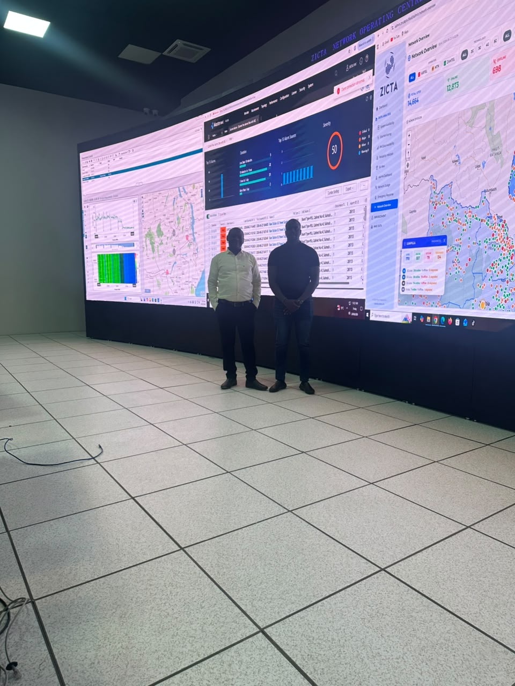
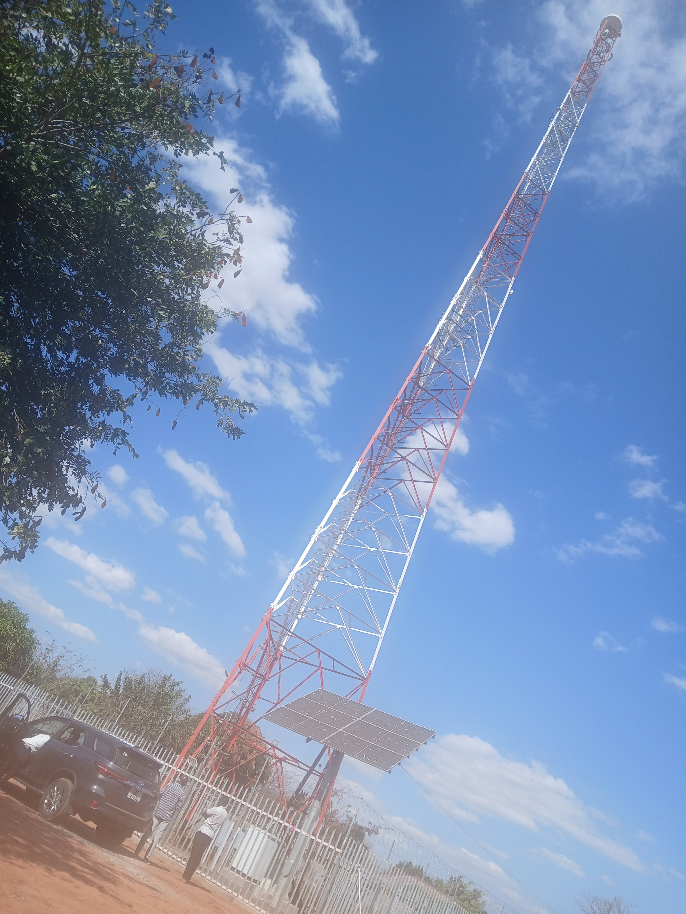
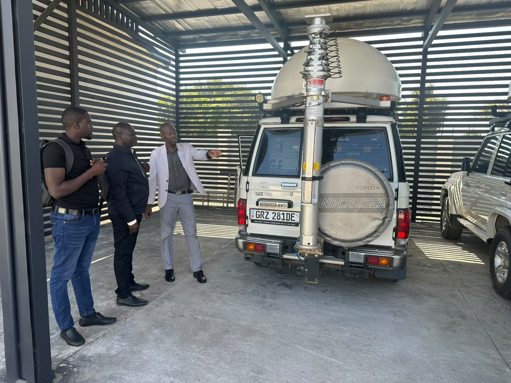
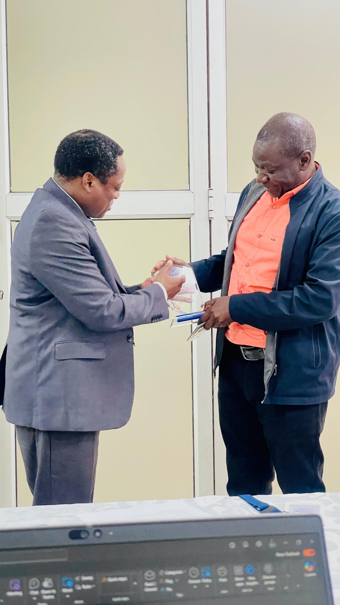

Uganda Communications Commission
Report on the Benchmarking & Technical Attachment Exercise
Practical Insights into ZICTA Spectrum Management, Licensing Frameworks, and Regulatory Modernization

In pursuit of regulatory excellence, the Uganda Communications Commission undertook a comprehensive benchmarking and technical attachment exercise with the Zambia Information and Communications Technology Authority. The primary objective of this initiative was to evaluate and adopt international best practices in compliance monitoring, quality of service assessment for broadcasting, radio frequency spectrum usage, and associated regulatory frameworks.
ZICTA was selected as a peer regulator due to its robust broadcasting sector, advanced spectrum management processes, and recent technological transitions. The specific objectives of the visit were to gain practical insights into:
The Commission was represented by the following technical officials during the benchmarking and attachment exercise:
As part of its strategic mandate, the Commission primarily operates TCI spectrum monitoring infrastructure and has recently completed a comprehensive upgrade to address equipment obsolescence. While the TCI systems have demonstrated strong, reliable performance, the technical team is actively exploring vendor diversification strategies to enhance cost-effectiveness, build system redundancy, and improve overall network resilience.
Comparatively, ZICTA presents several highly relevant operational case studies for the Commission:
The team inspected ZICTA's Central Monitoring Unit and Central Network Operations Center. While core monitoring methodologies mirror those of the Commission, ZICTA has successfully integrated real-time performance monitoring of operator base stations. The central dashboard displays the operational status of all operator sites concurrently, allowing engineers to instantly flag anomalies and formally issue Requests for Explanation to non-compliant operators.

Field Visit: Remote Monitoring Station (Livingstone)
Located approximately 600km from Lusaka, this station features a compact mast-mounted processor equipped with a standalone solar power system. It utilizes an integrated wireless network router with a cellular identity module slot for high-speed backhaul over 4G and 5G networks into the core system virtual private network. This identical architecture is deployed across Mobile Monitoring Units, harmonizing all remote, fixed, and mobile nodes into a single central server.

Engagement with the Spectrum Planning team revealed aligned overarching business process flows but distinct variations in licensing tariffs. To resolve historical disputes and audit complexities regarding equipment-based frequency licenses—a challenge currently mirrored at the Commission—ZICTA transitioned its licensing framework for Two-Way VHF and Microwave links away from per-unit charging to a flat frequency license.

A technical session with the Standards Unit confirmed that both regulators face identical hurdles in verifying the authenticity of foreign test reports. Discussions focused on establishing collaborative mitigation strategies, such as developing Mutual Recognition Agreements.
Furthermore, ZICTA has operationalized a mandatory physical and digital labelling regime for all type-approved products, complemented by an open database. In terms of national numbering frameworks, ZICTA consulted the Commission on the deployment of Mobile Number Portability. Reciprocally, the Commission shared its advanced standing in Digital Audio Broadcasting technical trials and regulatory texts to guide ZICTA's upcoming introduction of Digital Audio Broadcasting.


The following matrix outlines the core actionable items arising from the benchmarking exercise tailored to the Commission's current context:
| Technical Initiative | Proposed Implementation Strategy | Feasibility Focus |
|---|---|---|
| Real-Time Operator Dashboards | Assess integrating live Network Management System data feeds from major operators into the Central Monitoring Unit to instantly monitor base station uptime. | Requires regulatory mandate or license modifications for secure access tokens. |
| Standalone Compact Solar Power | Formally advise the Administration unit to study the engineering feasibility of adopting ZICTA's remote site model using efficient solar and high-speed backhaul. | High feasibility; optimizes fixed spectrum monitoring station network reliability. |
| Flat Frequency-Based Billing | Migrate tariff structures from unit-based link billing to flat frequency-band charging per district for VHF or total bandwidth for Microwave networks. | Requires comprehensive revenue-impact modeling before deployment. |
| Modular Satellite Landing Frameworks | Initiate formal technical consultations with ZICTA to benchmark their tiered user-terminal framework for geostationary and non-geostationary mega-constellations. | Urgent and highly recommended to accelerate current reviews. |
| Equipment Labelling & Verification | Operationalize a mandatory physical and digital equipment labelling regime backed by an open public database and pursue regional Mutual Recognition Agreements. | Reduces compliance enforcement and auditing overhead. |
| Digital Audio Broadcasting Policy | Leverage Uganda's advanced standing in trials as a strategic bilateral tool, sharing technical codes in exchange for real-time peer review. | Ensures upcoming final regulations are robust and harmonized. |
The benchmarking exercise with ZICTA confirmed that while both regulators share aligned core workflows, ZICTA's recent transition to advanced telecom platforms, scalable satellite frameworks, and automated compliance tools offers an excellent operational blueprint for the Commission. Adopting their approaches to real-time operator monitoring dashboards, standalone solar backhaul infrastructure, and simplified, flat frequency-based billing will directly resolve the Commission's current technical limitations, power reliability issues, and administrative auditing bottlenecks.
To maximize the value of this exercise, the Commission should immediately review the feasibility of these structural upgrades. Using Uganda's advanced standing in Digital Audio Broadcasting trials as strategic leverage for continued, bilateral knowledge-sharing will ensure our upcoming regulatory frameworks are both robust and regionally harmonized.
Prepared and Submitted by:
|
Echeda Robert
Manager, Spectrum Compliance and Utilization
Uganda Communications Commission |
Isaac Olobo
Officer, Broadcast Authorization
Uganda Communications Commission |